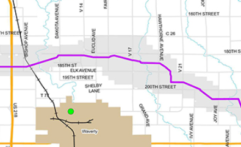
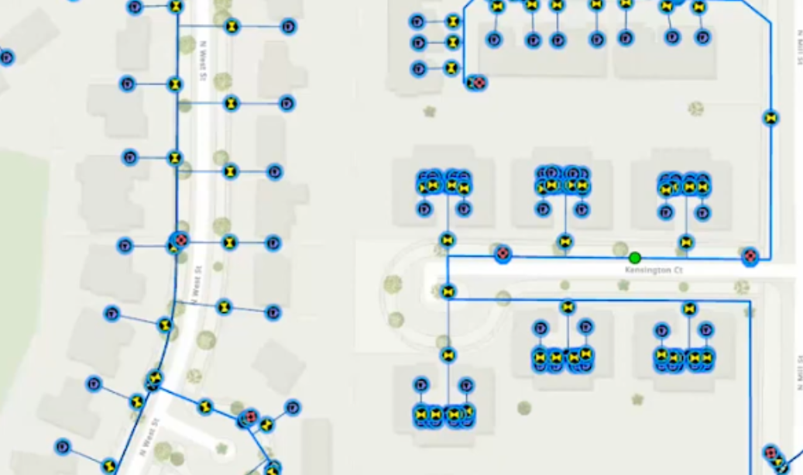
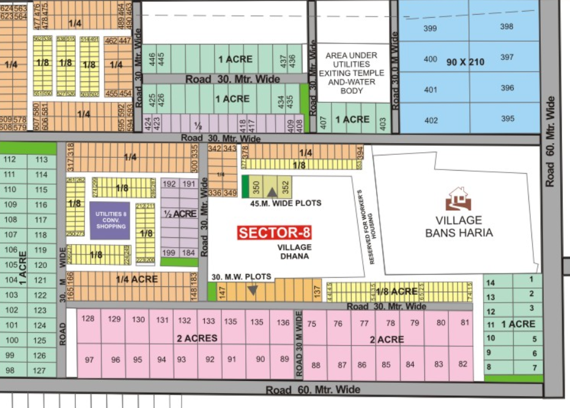
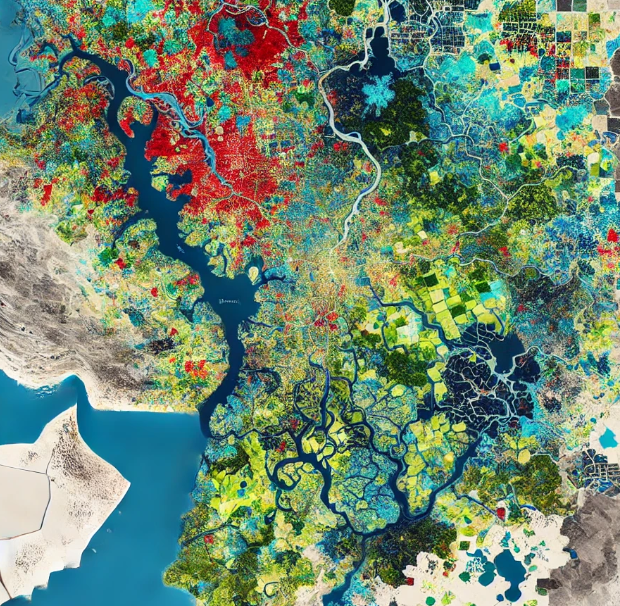
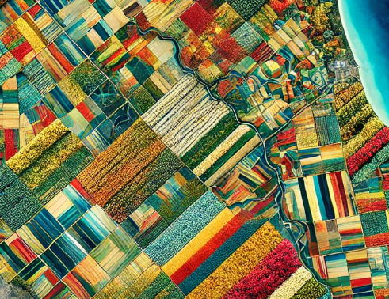

Featured Projects

Pipeline Connectivity
Comprehensive pipeline network mapping and analysis using ArcGIS and AutoCAD integration. Features detailed utility mapping and infrastructure planning.

Broadband Connectivity
Utility mapping project for broadband infrastructure using ArcGIS Pro. Includes network coverage analysis and service area mapping.

Haryana Shehri Vikas Pradhikaran
GIS in urban development and planning, highlighting its impact on effective governance and infrastructure management.

Urban Sprawl Analysis
Satellite imagery analysis and interpretation using ERDAS Imagine for land use classification, Urban detection and change detection studies.
- Satellite image preprocessing and enhancement
- Supervised classification using Sentinel-2 and Landsat imagery
- Accuracy assessment and validation
- Change detection analysis
- Final map composition using ArcGIS Pro

LULC Classification
Land Use Land Cover classification using remote sensing techniques. Project highlights:
- Satellite image preprocessing and enhancement
- Supervised classification using Sentinel-2 imagery
- Accuracy assessment and validation
- Change detection analysis
- Final map composition using ArcGIS Pro

Crop Classification Map
Agricultural crop mapping and classification using remote sensing data. Project features:
- Multi-temporal satellite data analysis
- NDVI and other vegetation indices calculation
- Machine learning-based classification
- Seasonal crop pattern analysis
- Crop yield estimation support